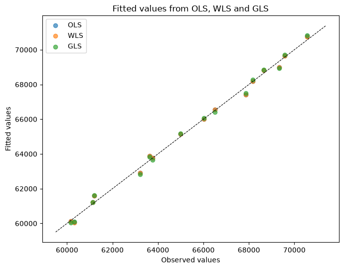

Model Comparison#
This notebook shows how to compare fitted models using the methods that statsmodels provides for the linear regression family (OLS, WLS and GLS).
For any two nested models, statsmodels gives you information criteria (AIC, BIC), likelihood-based tests, and F tests to decide whether a more flexible model is worth the extra parameters. We will fit the three members of the linear regression family to the same dataset and compare them side by side.
[1]:
import matplotlib.pyplot as plt
import numpy as np
import statsmodels.api as sm
The data#
We use the classic Longley dataset, which is bundled with statsmodels. It is a small macroeconomic time series with six predictors and total employment as the response.
[2]:
data = sm.datasets.longley.load()
data.exog = sm.add_constant(data.exog)
print(data.exog.head())
print(data.exog.columns)
const GNPDEFL GNP UNEMP ARMED POP YEAR
0 1.0 83.0 234289.0 2356.0 1590.0 107608.0 1947.0
1 1.0 88.5 259426.0 2325.0 1456.0 108632.0 1948.0
2 1.0 88.2 258054.0 3682.0 1616.0 109773.0 1949.0
3 1.0 89.5 284599.0 3351.0 1650.0 110929.0 1950.0
4 1.0 96.2 328975.0 2099.0 3099.0 112075.0 1951.0
Index(['const', 'GNPDEFL', 'GNP', 'UNEMP', 'ARMED', 'POP', 'YEAR'], dtype='str')
Baseline: Ordinary Least Squares (OLS)#
The OLS model assumes the errors are independent and identically distributed. It is the natural baseline that the other two estimators generalize.
[3]:
ols_res = sm.OLS(data.endog, data.exog).fit()
print(ols_res.summary())
OLS Regression Results
==============================================================================
Dep. Variable: TOTEMP R-squared: 0.995
Model: OLS Adj. R-squared: 0.992
Method: Least Squares F-statistic: 330.3
Date: Sat, 29 Aug 2026 Prob (F-statistic): 4.98e-10
Time: 13:46:22 Log-Likelihood: -109.62
No. Observations: 16 AIC: 233.2
Df Residuals: 9 BIC: 238.6
Df Model: 6
Covariance Type: nonrobust
==============================================================================
coef std err t P>|t| [0.025 0.975]
------------------------------------------------------------------------------
const -3.482e+06 8.9e+05 -3.911 0.004 -5.5e+06 -1.47e+06
GNPDEFL 15.0619 84.915 0.177 0.863 -177.029 207.153
GNP -0.0358 0.033 -1.070 0.313 -0.112 0.040
UNEMP -2.0202 0.488 -4.136 0.003 -3.125 -0.915
ARMED -1.0332 0.214 -4.822 0.001 -1.518 -0.549
POP -0.0511 0.226 -0.226 0.826 -0.563 0.460
YEAR 1829.1515 455.478 4.016 0.003 798.788 2859.515
==============================================================================
Omnibus: 0.749 Durbin-Watson: 2.559
Prob(Omnibus): 0.688 Jarque-Bera (JB): 0.684
Skew: 0.420 Prob(JB): 0.710
Kurtosis: 2.434 Cond. No. 4.86e+09
==============================================================================
Notes:
[1] Standard Errors assume that the covariance matrix of the errors is correctly specified.
[2] The condition number is large, 4.86e+09. This might indicate that there are
strong multicollinearity or other numerical problems.
Weighted Least Squares (WLS)#
If the error variance is not constant but proportional to a known variable, weighted least squares is more efficient than OLS. Here we weight each observation by the population (POP), i.e. we trust observations from years with a larger population relatively more.
[4]:
weights = data.exog["POP"].to_numpy(dtype=float)
wls_res = sm.WLS(data.endog, data.exog, weights=weights).fit()
print(wls_res.summary())
WLS Regression Results
==============================================================================
Dep. Variable: TOTEMP R-squared: 0.995
Model: WLS Adj. R-squared: 0.992
Method: Least Squares F-statistic: 331.2
Date: Sat, 29 Aug 2026 Prob (F-statistic): 4.92e-10
Time: 13:46:22 Log-Likelihood: -109.59
No. Observations: 16 AIC: 233.2
Df Residuals: 9 BIC: 238.6
Df Model: 6
Covariance Type: nonrobust
==============================================================================
coef std err t P>|t| [0.025 0.975]
------------------------------------------------------------------------------
const -3.513e+06 8.92e+05 -3.939 0.003 -5.53e+06 -1.5e+06
GNPDEFL 16.6801 85.244 0.196 0.849 -176.154 209.514
GNP -0.0368 0.034 -1.094 0.302 -0.113 0.039
UNEMP -2.0274 0.491 -4.133 0.003 -3.137 -0.918
ARMED -1.0349 0.215 -4.811 0.001 -1.522 -0.548
POP -0.0498 0.226 -0.220 0.831 -0.561 0.461
YEAR 1844.6696 456.006 4.045 0.003 813.113 2876.226
==============================================================================
Omnibus: 0.958 Durbin-Watson: 2.548
Prob(Omnibus): 0.619 Jarque-Bera (JB): 0.820
Skew: 0.478 Prob(JB): 0.664
Kurtosis: 2.437 Cond. No. 4.94e+09
==============================================================================
Notes:
[1] Standard Errors assume that the covariance matrix of the errors is correctly specified.
[2] The condition number is large, 4.94e+09. This might indicate that there are
strong multicollinearity or other numerical problems.
Generalized Least Squares (GLS)#
When the errors are correlated (as is often the case in time series), GLS can take that correlation structure into account. We fit the same model but assume the errors follow an AR(1) process. A consistent estimate of the autocorrelation \(\rho\) is obtained from the OLS residuals, and the corresponding covariance matrix is used in the GLS fit.
[5]:
ols_resid = np.asarray(ols_res.resid)
rho = np.corrcoef(ols_resid[1:], ols_resid[:-1])[0, 1]
n = len(data.endog)
sigma = rho ** np.abs(np.subtract.outer(np.arange(n), np.arange(n)))
gls_res = sm.GLS(data.endog, data.exog, sigma=sigma).fit()
print(gls_res.summary())
GLS Regression Results
==============================================================================
Dep. Variable: TOTEMP R-squared: 0.998
Model: GLS Adj. R-squared: 0.997
Method: Least Squares F-statistic: 734.7
Date: Sat, 29 Aug 2026 Prob (F-statistic): 1.39e-11
Time: 13:46:22 Log-Likelihood: -107.46
No. Observations: 16 AIC: 228.9
Df Residuals: 9 BIC: 234.3
Df Model: 6
Covariance Type: nonrobust
==============================================================================
coef std err t P>|t| [0.025 0.975]
------------------------------------------------------------------------------
const -3.802e+06 6.67e+05 -5.703 0.000 -5.31e+06 -2.29e+06
GNPDEFL -13.3013 69.084 -0.193 0.852 -169.581 142.978
GNP -0.0380 0.026 -1.456 0.179 -0.097 0.021
UNEMP -2.1894 0.380 -5.758 0.000 -3.049 -1.329
ARMED -1.1536 0.164 -7.020 0.000 -1.525 -0.782
POP -0.0684 0.175 -0.390 0.706 -0.465 0.328
YEAR 1995.8864 340.504 5.862 0.000 1225.612 2766.160
==============================================================================
Omnibus: 0.124 Durbin-Watson: 2.612
Prob(Omnibus): 0.940 Jarque-Bera (JB): 0.345
Skew: -0.049 Prob(JB): 0.842
Kurtosis: 2.288 Cond. No. 5.62e+09
==============================================================================
Notes:
[1] Standard Errors assume that the covariance matrix of the errors is correctly specified.
[2] The condition number is large, 5.62e+09. This might indicate that there are
strong multicollinearity or other numerical problems.
Comparing the models#
The simplest comparison uses the information criteria. Lower values of AIC and BIC indicate a better fit after penalizing model complexity. The log-likelihood (llf) measures how well the model fits the data, and R-squared is the usual coefficient of determination.
[6]:
results = [ols_res, wls_res, gls_res]
names = ["OLS", "WLS", "GLS"]
print(f"{'Model':<8}{'AIC':>12}{'BIC':>12}{'log-L':>12}{'R2':>10}")
for name, res in zip(names, results, strict=False):
print(
f"{name:<8}"
f"{res.aic:>12.3f}"
f"{res.bic:>12.3f}"
f"{res.llf:>12.3f}"
f"{res.rsquared:>10.4f}"
)
Model AIC BIC log-L R2
OLS 233.235 238.643 -109.617 0.9955
WLS 233.175 238.584 -109.588 0.9955
GLS 228.911 234.320 -107.456 0.9980
Comparing nested models#
statsmodels also provides formal hypothesis tests for nested models. The methods compare_lr_test (likelihood ratio test) and compare_f_test (Chow-style F test) compare a larger model against a restricted model that drops one or more regressors.
As an example, we take the baseline OLS model and remove the ARMED regressor. Both tests tell us whether dropping that regressor significantly worsens the fit.
[7]:
exog_restricted = data.exog.drop(columns=["ARMED"])
restricted_res = sm.OLS(data.endog, exog_restricted).fit()
lr_stat, lr_pvalue, lr_df = ols_res.compare_lr_test(restricted_res)
f_stat, f_pvalue, f_df = ols_res.compare_f_test(restricted_res)
print(f"Likelihood ratio test: stat={lr_stat:.3f}, p-value={lr_pvalue:.4f}, df={lr_df}")
print(f"F test: stat={f_stat:.3f}, p-value={f_pvalue:.4f}, df={f_df}")
Likelihood ratio test: stat=20.421, p-value=0.0000, df=1.0
F test: stat=23.252, p-value=0.0009, df=1.0
Visual check of the fitted values#
Finally, a quick visual comparison of the fitted values produced by the three estimators. We scatter the fitted values from OLS, WLS and GLS against the observed values on a single plot, using a distinct color for each estimator. The closer the points hug the dashed identity line, the better the fit.
[8]:
colors = ["#1f77b4", "#ff7f0e", "#2ca02c"]
fig, ax = plt.subplots(figsize=(7, 5.5))
for name, res, color in zip(names, results, colors, strict=False):
ax.scatter(data.endog, res.fittedvalues, alpha=0.65, label=name, color=color)
ymin, ymax = ax.get_ylim()
ax.plot([ymin, ymax], [ymin, ymax], color="k", linestyle="--", linewidth=0.8)
ax.set_xlabel("Observed values")
ax.set_ylabel("Fitted values")
ax.set_title("Fitted values from OLS, WLS and GLS")
ax.legend()
plt.tight_layout()
plt.show()

Summary#
In this example the GLS estimator, which accounts for the serial correlation in the residuals, achieves the lowest AIC and BIC among the three models. The nested-model tests show that ARMED is a statistically significant predictor, so it should be kept in the model.
The key takeaway: for nested models compare_lr_test and compare_f_test give you a formal answer, and for non-nested models the information criteria (AIC/BIC) are the tool to use.